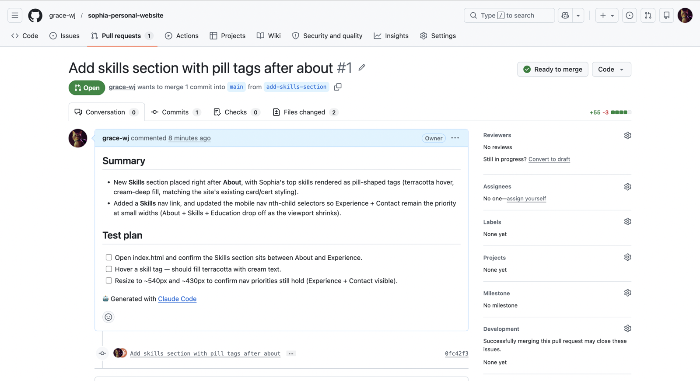

claude-bot
A coding agent I run from my phone. I text it a task over Telegram and it works on my real GitHub repos — from anywhere, no laptop open.
claude-bot turns a Telegram chat into a full coding agent. I message it a task — fix a bug, add a feature, refactor a file — and it works directly on my GitHub repositories: cloning the repo, editing code, running commands, and pushing commits or opening a pull request. Because it lives on an always-on server and talks over Telegram, I can ship real changes from my phone, anywhere, without opening a laptop.
See it work
A real example: from my phone, I asked it to add a "focus areas" section to a portfolio site — and it opened a pull request with the change, written to match the site's existing style.
/repo, describe the change in plain English, and it gets to work — cloning the repo, editing files, and running commands on the server while the replies stream back.
How it works
The system has four moving parts that hand work down the chain from a text message to a committed change:
- Telegram as the interface. Every message from an allow-listed account becomes a task, and replies stream back as the agent works. There's no app to build and it works on any device I already have.
- The bot process. A TypeScript service (grammy + the Claude Agent SDK) long-polls Telegram, so it needs no inbound ports. Each chat keeps its own persistent session, model choice, and working repo in a local SQLite store.
- The agent and workspace. Each task spawns a Claude agent turn against a freshly cloned GitHub repo. The agent has real tools — file edits, a shell, git, and browser automation over MCP — so it can make changes and open pull requests, not just chat.
- The host. Everything runs on a small Hetzner VPS as a managed background service that stays up between messages.
Running it in production
I deployed it on a €5/month Hetzner VPS as a hardened systemd service: it runs as an unprivileged user with a read-only filesystem, a tmpfs home, and a 2 GB memory cap, and restarts automatically on failure. Deploys are a git pull, build, and service restart, with live logs over journalctl. Because the bot only makes outbound connections to poll Telegram, the server needs no open inbound ports beyond SSH.
Reliability & cost controls
A coding agent left running on a server can wedge or quietly run up a bill, so I built in guardrails:
- a per-chat message queue with rate limiting, so back-to-back tasks run in order instead of colliding;
- a hard daily spend cap (USD per UTC day) that refuses new turns once it's hit;
- idle and wall-clock timeouts that abort a turn if it stalls or runs too long;
- a watchdog that restarts the process if it hangs, plus graceful shutdown on deploy so nothing is left half-done;
- in-chat controls —
/stop,/queue,/drain,/cost,/usage,/repo,/model— to inspect and steer it all from the conversation.